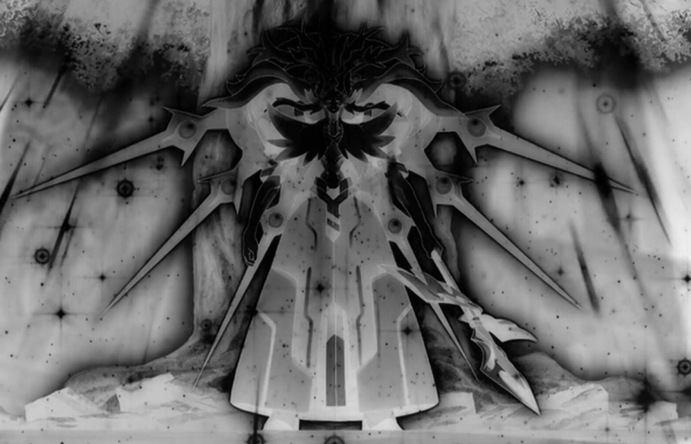

第四百九十五章 这游戏不是开玩笑的
“你到底对我做了什么？”
桐人用悲愤的目光看着面前的艾吉质问道。
他明明之前碰到月姬的时候已经摆脱月姬帮忙做了个插件覆盖了被系统误判的性别，为什么又会突然变成了女生！
手上的剑，虽然很久不见了，但是桐人还记得，那是亚丝娜曾经使用的剑，从花道之剑开始，每每当剑用到极限的时候，她就会就将剑化为铸材用于锻造或者强化新的剑，可以说这把剑贯穿了亚丝娜从SAO第一层开始到最后的两年经历，见证了一个菜鸟最后成为第一公会领军人物的传奇。
除了手上的闪烁之光，他身上的防具也是非常熟悉的样式，是曾经在SAO通过前的那段时间所使用的防具，虽然属性不是很高，但却是最适合他使用二刀流的轻便装备，在迷宫区里无数次陪伴他打败一个又一个难缠的对手。
除了性别，他的穿着装备就和SAO里最后的记忆里一模一样！而目前在场的这个人，正是为了某个目的在收集记忆的人，所以桐人只能认为是对方做了什么才会让自己变成这个样子！
“你是黑之剑士？”艾吉皱着眉看了看地上的少年，然后看了看对自己怒目而视的俏丽少女，“没想到传言是真的……”艾吉说道，桐人的状态倒是没有让他太多惊讶，因为他知道Augma所使用的AR系统的本质，其实还是完全潜行系统，通过某种手段弄出和尤娜一样的假想体是完全没问题的。
“传言？”桐人眨了眨眼睛，随即想到艾基尔和克莱因第一次看到她女装的时候说过的话——曾经他们都以为将SAO完全攻略的人会是一个和黑长直的女性剑士。
这不仅仅是两个参与当时最终战的友人的意思，事实上，在之后的SAO生还者的聚会里，也有多人表示在那天的前一晚做过会在那天通关游戏的梦，梦的内容很模糊，很多人在被提及这件事前甚至都记不得了，而当时在第七十五层现场的玩家，其中特别是红衣骑士团的诸位倒是记得稍微清楚，大致上，他们记得是一个黑衣的女性玩家泛着金光击败了某个巨大的阴影解放了他们，
一个人可能是错觉，但是那么多人同时做过这样的梦，即使很多人都记不清楚只留下大致的印象，这也足以让人惊叹，一时间成为了圈内人的话题。
其实从结果上看，因为亚丝娜的牺牲，所以才导致他爆发出难以理解的力量打败茅场，倒是和女性、金光、黑衣这些关键词挺符合的，说是他和亚丝娜两人的爱的力量让七十五层就通关的奇迹出现也无不可，但是不知道什么时候，在SAO生还者之间，传出了他黑衣剑士桐人其实是女性的传言……
“废话少说！现在的情况已经不同了！”
被艾吉点出了不想回忆的往事的桐人收敛的怒容，拿着亚丝娜的闪烁之光摆出出剑的姿势严阵以待，虽然她是靠着二刀流才击败希兹克利夫的，但是，她最常用的还是单手剑，即使是细剑也可以，她能用的出在SAO里磨练已久的剑术！
如她说的那样，情况已经不一样了！
她能感觉的到，虽然是女性的身体，但是这具身体却充满了力量，并且和假想世界里的身体一样轻盈。
没有原本身体沉重体感的拖累，以她的神经反应能力，她会比之前更强！
“虽然似乎变得更棘手的样子，但是我不会再输了的！”
感受到对方的战意，艾吉也握着剑用坚定的目光回应对方。
不详的雾气的地下车库里弥漫着，幽暗的空间远处是不是响起渗人的呼啸声，但这丝毫不影响剑拔弩张的两人进行最后的决战。
“住手！你们！”
在两人开始行动的时候，突然一个白色的人影出现在两人的中间高声喊道，挥出的剑戛然而止，堪堪一左一右的停在那人的脖子两边。
“你是……”桐人轻声的喃喃道。
“尤娜！”艾吉先一步的叫出了阻拦两人最后决战的人的名字。
……
“嗯？可恶的巫女！”
天空中的裂缝不知什么时候已经变得比刚刚出现的时候更大一点，一道邪雷从裂缝里射出，直指亚丝娜而去，在即将打在亚丝娜身上的时候，桔梗印在亚丝娜的头顶浮现，放出耀眼的光辉阻挡了邪雷的攻击。
“不会让你得逞的！”另外一名带着狐面背着木弓的白发巫女在通道边上出现，结着印仰着头看着天空中的巨大眼瞳。
“哼！那么这样呢……”
一身冷哼，邪雷再次从裂缝里钻出来，但是却没有打在亚丝娜的身上，而是落到了地面上，强大的威势甚至将空间撕开，一只脚从被撕开的空间里踏出，接着露出了其巨大的身姿，那是本该位于艾恩格朗特最顶层房间的最终领主。
“除掉白巫女！”
裂缝里的未知存在对着最终领主下达命令道，无尽的邪气从裂缝里涌出，源源不断的灌输在最终领主的身上，徒劳的挣扎之后，虽然邪气没有将其扭曲变成其他东西，但也让代表着SAO与OS最强单位的身躯被染黑，并且如那个存在所命令的一样，最终领主向着巫女亚丝娜走去。
“诸位！白巫女在请神明之力封印阴界裂缝，此刻不得受到干扰！还请诸位相助！如若让阴界裂缝彻底打开，人间将万劫不复！”白发的巫女结着印振振有词的大声说道。
“哦——”
虽然不太清楚情况，但既然是帮助两位漂亮巫女的事情，自然能极大程度的调动起在场的人的积极性。
“果然呢，这就是应天之召吗？单单从视觉上看，确实很刺激呢。”
虽然带着狐面，但是莉兹贝特认出那个人就是月姬，毕竟标志性的白发不多见，而月姬出场的那一刻，他就已经非常笃定现场的混乱情况到底是这么一回事，完全就是主办方在搞事，不过她也有点奇怪，游戏做的那么真，真的过审的？
“嗯，这个游戏并没有过审。”仿佛知道莉兹贝特在想什么似得，熟悉的声音在身边响起。
“诶？！月姬！！！！”莉兹贝特发出惊讶的轻呼，她看了看远处的月姬再看了看身边的月姬。
两个月姬？
“三个我也能给你变出来。”月姬耸了耸肩说道，然后指了指会场边缘，确实有很多带着狐面的月姬正结印站着一动不动。
“你知道我在想什么？”
“看你的表情就猜出来了。”月姬白了下眼睛说道，“过审的只是低配版而已，这才是真正的应天之召……有没有很熟悉的感觉，说起来当年也有人和你们说过类似的话呢。”
“……”莉兹贝特几人面面相觑，确实，当年SAO开服的时候，茅场也是那么和他们说的，不能登出的SAO才是真正的SAO。
“抛开闲话，和SAO一样，这个游戏也不是闹着玩的哦。”
“诶？诶——！！！”
“那个啊，是你们这些人类大脑与网络直连残留在网络上的负面意识碎片集合体哦。”月姬指着天空中被结界阻挡的孟克脸说道，“之前还能靠一些插件，让玩家自己在游戏内部自己解决，但是最近完全潜行技术的发展势头太猛了，原本的插件性能有点跟不上了，而新的插件又不能兼容原本的系统，所以我只能重新做了个服务器，然后将所有的情绪数据都导到新服务器里，用完全独立的系统处理这些情绪数据。这些都是导入过程里泄露的部分，普通攻击是对它们无效的，不过你们现在的状态倒是可以对他们造成有效伤害，我和亚丝娜现在为了维持这种状态暂时抽不开身，所以接下来需要靠你们自己去清理这些垃圾，加油哦，如果失败了，被这些东西上身，会变成精神病也说不定呢。”
……
【所谓的堕化版，其实就是变黑白，调整下黑度而已，太麻烦的操作不想做】
【已经展开到我都不知道要怎么圆了】
【上一章吐槽很少，我不开心】
【大概没有人注意到我改了上一章的一点点剧情】